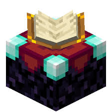

📚 Maximise Your Enchanting Table
To unlock the highest enchantment level (30), you need to surround your enchanting table with exactly 15 bookshelves placed in a 5×5 ring, one block away with a clear air gap between them and the table. Adding more than 15 bookshelves has no additional effect. Make sure there are no blocks in the gaps between the bookshelves and the table, or the bookshelves won't count.

📖 Using an Anvil to Combine Books
Use an anvil to combine enchanted books onto your gear, or to merge two items with different enchantments. Each combination costs experience levels — be aware of the prior work penalty, which doubles the cost each time you modify an item. To keep costs manageable, plan your enchanting order: add the most expensive enchantments first, as cheaper ones added later result in lower total XP cost.

🔮 Grindstone to Reset Enchantments
If your item has unwanted enchantments from the table, use a Grindstone to remove all non-curse enchantments and get some XP back. This is cheaper than wasting materials on a poorly enchanted item. Note that Curse of Vanishing and Curse of Binding cannot be removed by a Grindstone.
🎣 Fishing for Enchanted Books
Fishing with a Luck of the Sea III fishing rod is one of the best ways to obtain rare enchanted books without spending XP. You can fish up books like Mending, Silk Touch, and Fortune — enchantments that are otherwise difficult to get from a table alone. Set up an AFK fish farm to collect books and XP passively.
⚔️ Sword: Sharpness V, Looting III, Fire Aspect II, Unbreaking III, Mending
🪖 Armor: Protection IV, Unbreaking III, Mending (+ Feather Falling IV on boots)
⛏️ Pickaxe: Efficiency V, Fortune III or Silk Touch, Unbreaking III, Mending
🏹 Bow: Power V, Infinity I, Punch II, Flame I, Unbreaking III